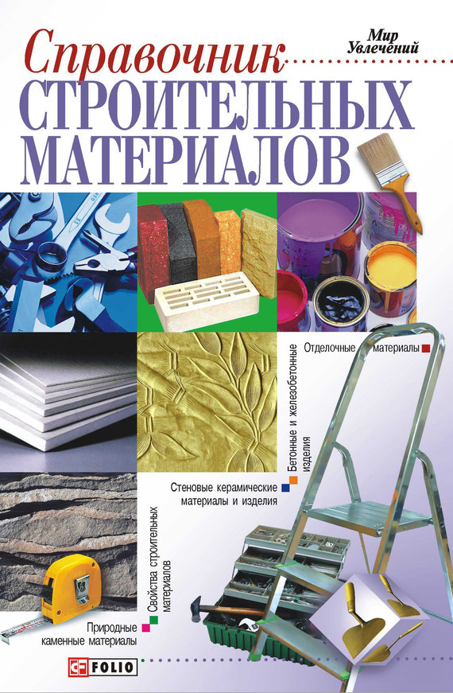

Эмульсии и пасты.

Эмульсиями называют дисперсные системы, состоящие из двух не смешивающихся между собой жидкостей, одна из которых находится в другой в мелкораздробленном (диспергированном) состоянии. В подобных системах различают дисперсионную среду и дисперсную фазу, которая распределена в первой.
Битумные и дегтевые эмульсии — это дисперсные системы, в которых вода является средой, а диспергированный битум или деготь – фазой. Образование и устойчивость эмульсии достигается путем введения в нее специальных эмульгаторов – поверхностно-активных веществ или тонкодисперсных твердых порошков, которые, с одной стороны, понижают поверхностное натяжение между битумом и водой и этим способствуют более мелкому раздроблению, а с другой – сообщают частицам определенный заряд, препятствующий слиянию частиц. В качестве органических эмульгаторов для получения битумных эмульсий применяют олеиновую кислоту, концентраты ССБ и асидол.
Битумные пасты приготовляют из битума, воды и эмульгатора. В качестве эмульгатора используют неорганические тонкодисперсные минеральные порошки, содержащие активные коллоидные частицы размером менее 0,005 мм, добавляемые в воду при производстве паст: известь, глины, трепел молотый. Наиболее водоустойчивые пасты получают при применении известковых эмульгаторов. Битумные пасты применяют для устройства защитного гидроизоляционного покрытия, грунтовки изолируемой поверхности, уплотнения стыков в кровле, а также в качестве вяжущего для изготовления холодных мастик.
Качество битумных эмульсий, характеризуемое скоростью распада, зависит от свойств эмульгаторов и дисперсности эмульсии. Эмульсии, применяемые для смешивания с мелкими материалами, не должны распадаться до полного объединения с ними, а при обработке сырых поверхностей должны быть устойчивыми при разведении водой. Битумные эмульсии после нанесения их на поверхность должны относительно быстро и полно выделять битум в виде тонкой и плотной пленки, которая снова переходит в эмульсию при действии воды. В отличие от битумов, дегтей и пеков, которые применяют в строительстве обычно разогретыми, в сухую погоду и при сухих заполнителях, битумные эмульсии используют в холодном состоянии. Их можно наносить на влажные поверхности.
Эмульсии применяют для устройства защитного гидроизоляционного и пароизоляционного покрытия, грунтовки основания под гидроизоляцию, приклейки штучных и рулонных материалов, а также гидрофобизации поверхностей изделий. Кроме того, эмульсию добавляют к воде затворения при изготовлении бетонов; этим достигается их объемная гидрофобизация. Хранят эмульсию в металлической таре в закрытых помещениях с температурой не ниже 0 °C; тара должна быть чистой, так как присутствие посторонних примесей может вызвать быстрый ее распад. Транспортируют эмульсии в бочках или цистернах.